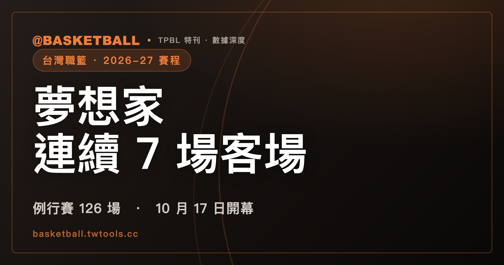

TPBL 2026-27 例行賽每隊 18 主 18 客，夢想家卻有連續 7 場客場
依 2026 年 10 月 2 日抓取的 TPBL 官網賽程資料，2026-27 例行賽共 126 場，10 月 17 日開幕、2027 年 5 月 16 日收官。每隊 18 主 18 客，賽季形狀卻不同。

台灣職籃 · 2026-27 賽季｜賽程 · 主客場 · 休兵
2026 年 10 月 17 日（六）17:00，福爾摩沙夢想家在臺中洲際迷你蛋迎戰新北國王，TPBL 2026-27 例行賽開幕。
上季總冠軍賽也是這兩隊。夢想家在第 7 戰以 90：78 擊敗國王，系列賽 4：3 拿下隊史首冠。上季冠軍與休賽季的球員異動，整理在〈2026 台灣職籃休賽季異動總表〉。
TPBL 在 2026 年 9 月 11 日公布這一季的例行賽賽程。依 2026 年 10 月 2 日抓取的官網賽程資料，七隊的總量一樣：每隊 36 場，18 場主場、18 場客場。
差別在順序。夢想家從 2027 年 1 月 24 日到 3 月 6 日，連續 7 場都在客場。桃園台啤永豐雲豹從 1 月 23 日到 2 月 14 日，連續 6 場都在主場。臺北台新戰神與高雄全家海神，各有一段相隔 20 天才打下一場的休兵。
本文只談 TPBL。台灣為什麼同時有 TPBL 與 PLG 兩個職籃聯盟，合併談判的經過寫在〈為什麼台灣有兩個職籃聯盟？〉。讀完本文，可以從文中的表查出支持的球隊哪一天首次進主場、哪幾場排在平日晚上。
126 場例行賽，七隊每隊 36 場、與每個對手各打 6 場
依 2026 年 10 月 2 日抓取的官方賽程資料，TPBL 2026-27 例行賽共 126 場。七隊每隊 36 場，主場 18 場、客場 18 場。NOWnews 在 9 月 11 日的報導，數字相同：例行賽 126 場，每隊出賽 36 場，主、客場各 18 場。
拆到對手層級，分配也一樣平均。任兩隊在例行賽交手 6 次，各有 3 場在雙方的主場。七隊兩兩配對共 21 組，21 組乘以 6 場，正好是 126 場。TPBL 賽務規章把例行賽寫成 7 隊、6 輪循環賽；規章條文與季後賽怎麼晉級，見〈TPBL 與 PLG 規則比較〉。
例行賽從 2026 年 10 月 17 日打到 2027 年 5 月 16 日，共 74 個比賽日。其中 52 天各有 2 場，22 天各有 1 場，沒有一天排 3 場。每隊也沒有同一天打兩場。
場數在月份之間有起伏。10 月 8 場、11 月 12 場，12 月與 1 月各 21 場。2 月降到 14 場，3 月 17 場、4 月 19 場、5 月 14 場。八個月加起來是 126 場。
例行賽收官日是 5 月 16 日（日），排了兩場。14:30 夢想家在臺中洲際迷你蛋主場對雲豹；17:00 新北中信特攻在新莊體育館主場對新竹御嵿攻城獅。前一天 5 月 15 日（六）也有兩場。
例行賽開打之前，七隊在 2026 年 10 月 9 日至 11 日於臺北和平籃球館打三天七場季前熱身賽。熱身賽不算進例行賽的 126 場。
110 場排在週六、週日，週三與週五的 16 場都在晚上 7 點開賽
依同一份 2026 年 10 月 2 日抓取的例行賽資料，週六有 55 場、週日有 55 場，合計 110 場。週三有 9 場、週五有 7 場，合計 16 場。週一、週二、週四沒有例行賽。
開賽時間分成三種。週六、週日的 110 場排在 14:30 或 17:00，其中 14:30 共 56 場、17:00 共 54 場。週三、週五的 16 場，全部 19:00 開賽。
平日晚上的場次落在週三與週五。七隊裡，國王與雲豹各有 6 場排在週三或週五，其餘五隊各 4 場。
12 月 25 日（五）聖誕節排了一場例行賽：19:00 雲豹在桃園巨蛋主場對特攻。
下表回答一個問題：平日晚上的 16 場，分別是哪兩隊、在哪裡打。開賽時間都是 19:00；日期在 1 月以後的屬於 2027 年。
| 日期 | 主隊 | 客隊 | 場館 |
|---|---|---|---|
| 11/25（三） | 夢想家 | 攻城獅 | 臺中洲際迷你蛋 |
| 11/27（五） | 夢想家 | 雲豹 | 臺中洲際迷你蛋 |
| 12/2（三） | 國王 | 戰神 | 新莊體育館 |
| 12/4（五） | 國王 | 特攻 | 新莊體育館 |
| 12/23（三） | 雲豹 | 國王 | 桃園巨蛋 |
| 12/25（五） | 雲豹 | 特攻 | 桃園巨蛋 |
| 12/30（三） | 戰神 | 攻城獅 | 和平籃球館 |
| 1/6（三） | 攻城獅 | 國王 | 新竹縣體育館 |
| 2/17（三） | 海神 | 雲豹 | 高雄巨蛋 |
| 2/19（五） | 海神 | 夢想家 | 高雄巨蛋 |
| 3/26（五） | 特攻 | 夢想家 | （場館欄空白） |
| 4/9（五） | 特攻 | 海神 | （場館欄空白） |
| 4/14（三） | 戰神 | 雲豹 | 和平籃球館 |
| 4/28（三） | 國王 | 戰神 | 新莊體育館 |
| 5/5（三） | 攻城獅 | 雲豹 | 新竹縣體育館 |
| 5/7（五） | 國王 | 海神 | 新莊體育館 |
七隊的第一場比賽與主場開幕，有四隊不是同一天
球季開打那天，不等於自家主場開幕那天。依 2026 年 10 月 2 日抓取的例行賽賽程資料，七隊的主場開幕日從 10 月 17 日排到 11 月 14 日，前後相隔 4 週。
國王在 10 月 17 日就出賽，但那一場是到臺中作客。國王的主場開幕是 10 月 31 日（六）14:30，在新莊體育館對雲豹。
雲豹的第一場比賽，就是 10 月 31 日作客國王的這一場。雲豹的主場開幕還要再等兩週，是 11 月 14 日（六）14:30，在桃園巨蛋對攻城獅。
海神的第一場比賽在 10 月 18 日（日），也是客場。海神的主場開幕是 10 月 31 日（六）17:00，在高雄巨蛋對戰神。戰神的第一場比賽在 10 月 24 日（六）17:00，到新莊體育館作客特攻；戰神的主場開幕是 11 月 7 日（六）14:30，在和平籃球館對夢想家。
另外三隊的第一場比賽就是主場開幕。夢想家是 10 月 17 日。攻城獅是 10 月 24 日 14:30，在新竹縣體育館對夢想家。特攻同一天 17:00，在新莊體育館對戰神。NOWnews 9 月 11 日的報導，逐隊寫出的主場開幕日與官方資料相同。
下表回答：七隊各自哪一天第一次出賽、哪一天第一次在主場出賽。
| 隊 | 第一場比賽 | 主場開幕 | 開幕對手 | 開賽時間 |
|---|---|---|---|---|
| 夢想家 | 10/17（六） | 10/17（六） | 國王 | 17:00 |
| 攻城獅 | 10/24（六） | 10/24（六） | 夢想家 | 14:30 |
| 特攻 | 10/24（六） | 10/24（六） | 戰神 | 17:00 |
| 國王 | 10/17（六） | 10/31（六） | 雲豹 | 14:30 |
| 海神 | 10/18（日） | 10/31（六） | 戰神 | 17:00 |
| 戰神 | 10/24（六） | 11/7（六） | 夢想家 | 14:30 |
| 雲豹 | 10/31（六） | 11/14（六） | 攻城獅 | 14:30 |
主場開幕在哪裡打，看各隊的例行賽主場館。下表列出 18 場主場裡，官方資料填了哪個場館。
| 隊 | 例行賽主場館 | 有填場館 | 場館欄空白 |
|---|---|---|---|
| 夢想家 | 臺中洲際迷你蛋 | 18 場 | 0 場 |
| 攻城獅 | 新竹縣體育館 | 18 場 | 0 場 |
| 特攻 | 新莊體育館 | 12 場 | 6 場 |
| 國王 | 新莊體育館 | 14 場 | 4 場 |
| 海神 | 高雄巨蛋 | 18 場 | 0 場 |
| 戰神 | 和平籃球館 | 18 場 | 0 場 |
| 雲豹 | 桃園巨蛋 | 18 場 | 0 場 |
每隊都是 18 主 18 客，夢想家卻有一段連續 7 場客場
本文說的「連續主場」「連續客場」，是照一隊自己的出賽順序，數連續幾場都在主場或都在客場，與中間隔幾天無關。
依 2026 年 10 月 2 日抓取的例行賽賽程，夢想家從 2027 年 1 月 24 日到 3 月 6 日，連續 7 場都在客場。在七隊例行賽 126 場裡，夢想家是唯一有連續 7 場客場的球隊。其他六隊的連續客場，都在 4 到 5 場。
換成月份來看，同一段客場也看得出來。夢想家 2 月打 4 場，4 場都在客場，2 月沒有主場。這段客場的第 7 場，是 3 月 6 日（六）17:00 作客國王；官方資料這場的場館欄空白。同一季的 11 月，夢想家有 4 場主場、1 場客場。
雲豹的形狀方向相反。雲豹從 1 月 23 日到 2 月 14 日，連續 6 場都在主場。在七隊例行賽 126 場裡，雲豹是唯一有連續 6 場主場的球隊。其他六隊的連續主場，都在 3 到 4 場。
雲豹這段主場的日期，跨過了 1 月 31 日至 2 月 13 日的聯盟空檔。第 6 場是 2 月 14 日（日）情人節，14:30 在桃園巨蛋對國王。同一天 17:00 還有一場：海神在高雄巨蛋主場對攻城獅。
2 月 14 日之後，雲豹的下一場是 2 月 17 日（三）19:00 到高雄巨蛋作客海神。從這場開始，雲豹接著有一段連續 5 場客場，到 3 月 21 日結束。
依月份分開看，七隊各月的主客場裡，沒有主場的月份共有五個：夢想家 2 月（上面提過的 4 場客場）、雲豹 10 月 0 場主場、1 場客場，戰神 10 月 0 場主場、2 場客場，攻城獅 11 月 0 場主場、3 場客場，海神 5 月 0 場主場、3 場客場。
下表回答：七隊各自連續幾場在主場、連續幾場在客場。每隊取場數多的那一段。
| 隊 | 連續主場 | 起訖 | 連續客場 | 起訖 |
|---|---|---|---|---|
| 夢想家 | 4 場 | 11/21–11/27 | 7 場 | 1/24–3/6 |
| 攻城獅 | 3 場 | 1/6–1/10 | 4 場 | 12/20–1/3 |
| 特攻 | 3 場 | 3/20–3/26 | 5 場 | 1/9–2/20 |
| 國王 | 4 場 | 3/6–3/14 | 5 場 | 12/23–1/16 |
| 海神 | 4 場 | 12/26–1/3 | 4 場 | 2/27–3/20 |
| 戰神 | 4 場 | 1/16–1/24 | 5 場 | 11/15–12/20 |
| 雲豹 | 6 場 | 1/23–2/14 | 5 場 | 2/17–3/21 |
本文查閱的官方賽程資料與 NOWnews 報導，都沒有說明賽程這樣排的原因。
戰神與海神各有一段相隔 20 天的休兵
本文說的「相隔 N 天」，是一隊相鄰兩場比賽的日期相減。戰神 2027 年 1 月 31 日打完一場，下一場在 2 月 20 日，相隔 20 天，中間有 19 天沒有比賽。海神 1 月 24 日打完一場，下一場在 2 月 13 日，同樣相隔 20 天。
依 2026 年 10 月 2 日抓取的例行賽賽程，七隊之中相隔 20 天的有戰神與海神兩隊。其他五隊各自的休兵，相隔天數在 14 到 17 天之間：國王 17 天，雲豹 16 天，攻城獅 15 天，特攻與夢想家各 14 天。
特攻的 14 天有兩段：1 月 9 日到 1 月 23 日，以及 5 月 1 日到 5 月 15 日。夢想家的 14 天有四段：2026 年 10 月 24 日到 11 月 7 日、11 月 7 日到 11 月 21 日、2027 年 1 月 30 日到 2 月 13 日、4 月 18 日到 5 月 2 日。
整個聯盟也有一段空檔。1 月 31 日之後，下一個比賽日是 2 月 13 日，相隔 13 天；2 月 1 日至 2 月 12 日沒有例行賽。另外，據《自由時報》報導的 2027 年行事曆，農曆春節假期是 2 月 4 日至 2 月 10 日，共 7 天。戰神與海神的 20 天，日期都涵蓋了 2 月 1 日至 2 月 12 日這段聯盟空檔。
休兵的反面是連續兩天出賽。週六、週日各打一場，就算一組連續兩天出賽。國王有 7 組，其餘六隊各 8 組。
下表回答：七隊各自相隔天數多的那一段休兵、連續兩天出賽幾組、例行賽打到哪一天。
| 隊 | 相隔天數 | 起訖 | 連續兩天出賽 | 例行賽末場 |
|---|---|---|---|---|
| 戰神 | 20 天 | 1/31→2/20 | 8 組 | 5/15 |
| 海神 | 20 天 | 1/24→2/13 | 8 組 | 5/9 |
| 國王 | 17 天 | 11/15→12/2 | 7 組 | 5/15 |
| 雲豹 | 16 天 | 12/25→1/10 | 8 組 | 5/16 |
| 攻城獅 | 15 天 | 1/30→2/14 | 8 組 | 5/16 |
| 特攻 | 14 天 | 2 段並列 | 8 組 | 5/16 |
| 夢想家 | 14 天 | 4 段並列 | 8 組 | 5/16 |
雲豹的 16 天，起點就是 12 月 25 日聖誕節那一場；下一場在 2027 年 1 月 10 日。海神的例行賽在 5 月 9 日打完，比其他六隊早。
國王與特攻有 10 場主場，官方賽程資料的場館欄空白
逐場賽程以 TPBL 官網賽程頁 tpbl.basketball/schedule 為準。以國王為例，依 2026 年 10 月 2 日抓取的例行賽資料，國王的賽季可以照下面的順序排出來：
- 第一場比賽：2026 年 10 月 17 日（六）17:00，到臺中洲際迷你蛋作客夢想家。
- 主場開幕：10 月 31 日（六）14:30，在新莊體育館對雲豹。
- 休兵：11 月 15 日打完一場，下一場在 12 月 2 日，相隔 17 天。
- 平日晚上：6 場，都是 19:00。12 月 2 日、12 月 4 日、2027 年 4 月 28 日、5 月 7 日在新莊體育館主場；12 月 23 日作客雲豹，1 月 6 日作客攻城獅。
- 連續主場：3 月 6 日至 3 月 14 日連續 4 場主場。
- 例行賽末場：5 月 15 日。
第 5 步的 4 場主場，是 3 月 6 日、3 月 7 日、3 月 13 日、3 月 14 日。官方資料這 4 場的場館欄空白。國王其他 14 場主場，填的都是新莊體育館。
特攻也有 6 場主場的場館欄空白，日期在 3 月至 4 月。兩隊加起來 10 場，其餘 116 場都有場館名。官方資料沒有說明空白的原因，這 10 場在哪裡打，以官網賽程頁為準。下表列出這 10 場。
| 日期 | 開賽 | 主隊 | 客隊 |
|---|---|---|---|
| 3/6（六） | 17:00 | 國王 | 夢想家 |
| 3/7（日） | 17:00 | 國王 | 海神 |
| 3/13（六） | 17:00 | 國王 | 攻城獅 |
| 3/14（日） | 17:00 | 國王 | 雲豹 |
| 3/20（六） | 14:30 | 特攻 | 國王 |
| 3/21（日） | 14:30 | 特攻 | 雲豹 |
| 3/26（五） | 19:00 | 特攻 | 夢想家 |
| 4/3（六） | 17:00 | 特攻 | 攻城獅 |
| 4/4（日） | 17:00 | 特攻 | 戰神 |
| 4/9（五） | 19:00 | 特攻 | 海神 |
換成支持的球隊，照同樣六步就能排出自己的賽季。本文的數字取自 2026 年 10 月 2 日抓取的資料，聯盟之後可能調整賽程；逐場的日期、時間與場館，以官網賽程頁為準。
賽季開打以後要查球員數據，官方數據頁上的 EFF、+/- 欄位從哪裡來、公式在哪裡找，拆解在〈TPBL、PLG 數據頁怎麼看〉。
常見問題
TPBL 2026-27 例行賽什麼時候開打、打到哪一天？
依 2026 年 10 月 2 日抓取的 TPBL 官網賽程資料，例行賽在 2026 年 10 月 17 日（六）17:00 開幕，由福爾摩沙夢想家在臺中洲際迷你蛋主場迎戰新北國王；例行賽收官日是 2027 年 5 月 16 日（日）。例行賽共 126 場，每隊 36 場，主、客場各 18 場。10 月 9 日至 11 日的季前熱身賽不算進例行賽。
七隊的例行賽主場開幕日分別是哪一天？
依 2026 年 10 月 2 日抓取的例行賽賽程資料，夢想家是 10 月 17 日；攻城獅與特攻是 10 月 24 日；國王與海神是 10 月 31 日；戰神是 11 月 7 日；雲豹是 11 月 14 日。國王、海神、戰神、雲豹的第一場比賽都在客場，早於主場開幕。賽程之後可能調整，以官網賽程頁為準。
平日晚上有 TPBL 例行賽嗎？
有。依 2026 年 10 月 2 日抓取的資料，例行賽有 16 場排在週三或週五，全部 19:00 開賽；週一、週二、週四沒有例行賽。國王與桃園台啤永豐雲豹各有 6 場排在週三或週五，其餘五隊各 4 場。
2027 年春節期間有 TPBL 例行賽嗎？
依 2026 年 10 月 2 日抓取的例行賽賽程，2027 年 2 月 1 日至 2 月 12 日沒有例行賽；1 月 31 日之後的下一個比賽日是 2 月 13 日。另外，據《自由時報》報導的 2027 年行事曆，農曆春節假期是 2 月 4 日至 2 月 10 日。賽程之後可能調整，以官網賽程頁為準。
資料來源
- TPBL 官網賽程頁（賽程資料 2026 年 10 月 2 日抓取）：tpbl.basketball/schedule
- 例行賽賽程公布與七隊主場開幕：NOWnews 2026 年 9 月 11 日報導
- 季前熱身賽日期與場館：TVBS 熱身賽報導
- 人事行政總處 2027 年行事曆報導：自由時報
本文的日期、場次與場館取自 2026 年 10 月 2 日抓取的官方賽程資料，聯盟之後可能調整；逐場資訊以官網賽程頁為準。